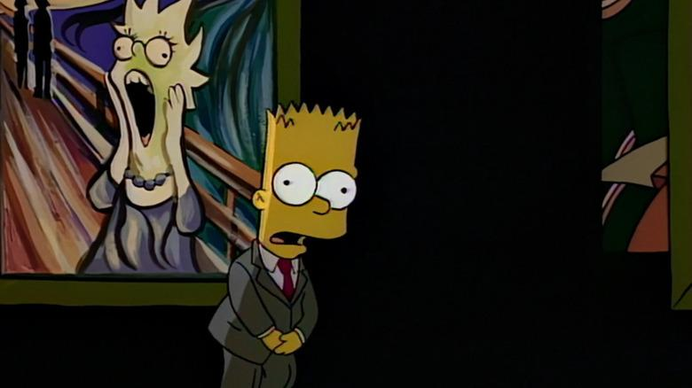
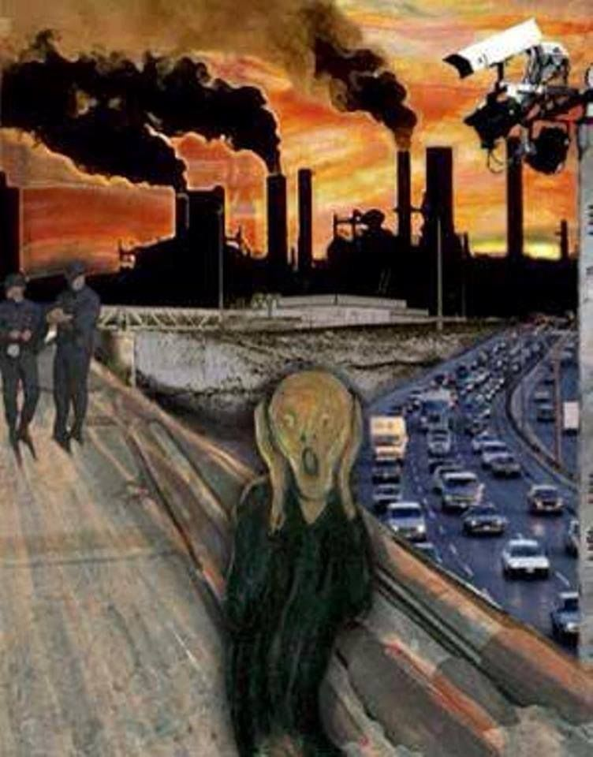
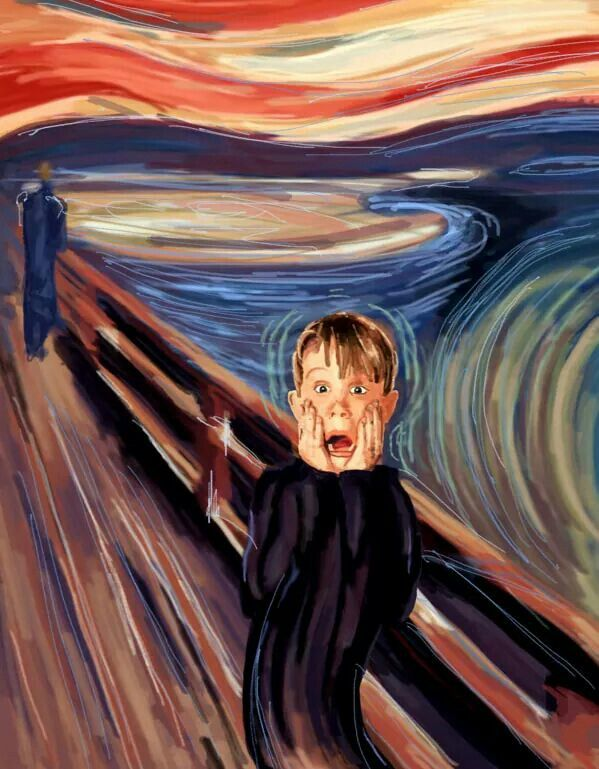
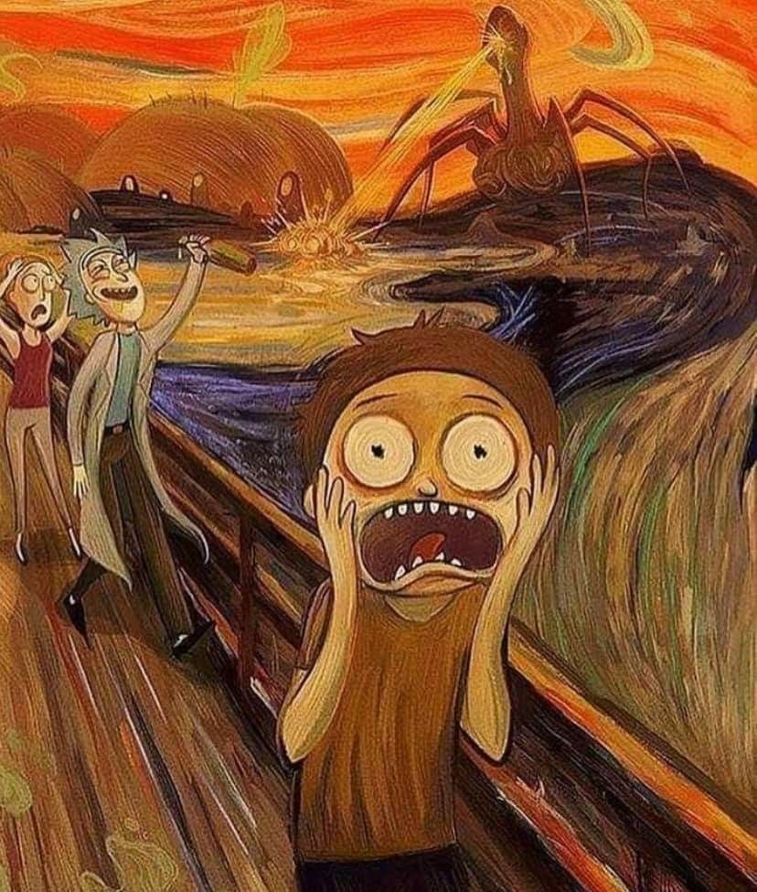
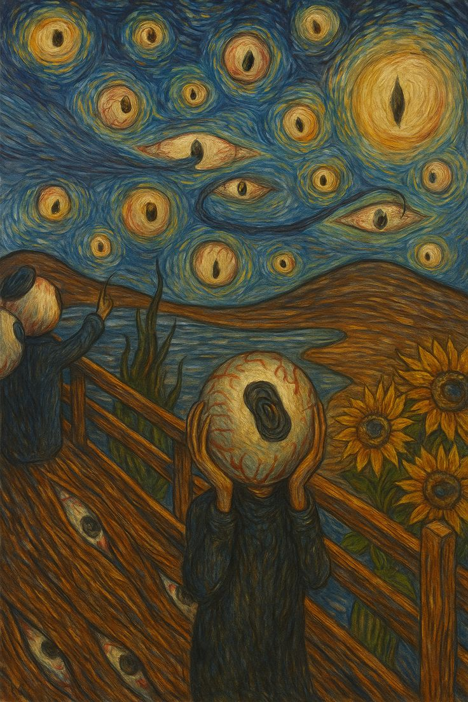
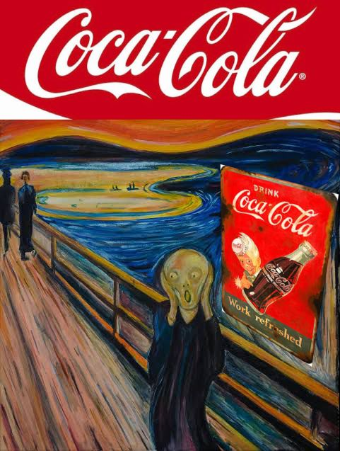
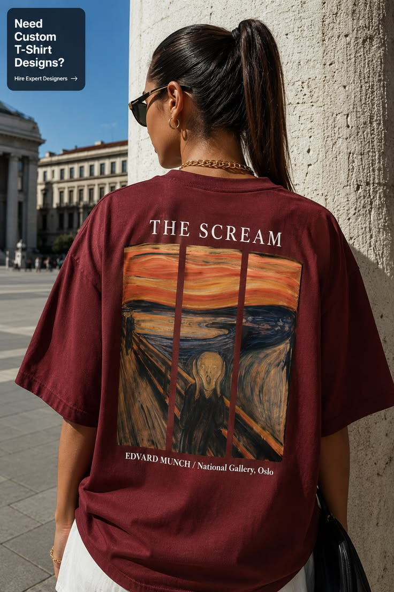

Se conserva
La pose, el rostro, la pintura expresionista y el cielo ondulante.
Análisis de cómo la obra maestra expresionista de Edvard Munch ha sido apropiada, transformada y dotada de nuevos significados.
Jhon Cubillos
El Grito (Skrik) - 1893

"El Grito" ha trascendido el ámbito de las bellas artes para incrustarse profundamente en el imaginario popular contemporáneo. Su figura andrógina y su rostro distorsionado por la desesperación se han convertido en un molde universal para expresar cualquier forma de impacto, miedo o asombro.
Hoy en día, la obra aparece en publicidad, en el cine inspirando el diseño de máscaras de terror, en redes sociales y memes como reacción a problemas cotidianos o políticos, e incluso en nuestra comunicación digital diaria a través del famoso emoji de terror (😱). Se ha despojado de su angustia clínica original para ser un lienzo en blanco de la expresión dramática colectiva.
Estudio de cambios en estilo, técnica, contexto y la adquisición de nuevos significados en la cultura visual.

La obra invierte su polaridad: de ser el símbolo de la víctima atormentada, se transforma en el símbolo del verdugo. La angustia se mercantiliza como terror comercial y la máscara vacía despoja al grito de su humanidad.

El terror metafísico se banaliza. El "grito" ya no responde a un ataque de pánico universal, sino que se asocia a las frustraciones cómicas del personaje. La obra de "alto arte" se desmitifica para ser consumida de forma accesible y humorística.

La imagen recupera la angustia, pero cambia el sujeto: ya no es el humano temiendo a la naturaleza, sino la naturaleza misma gritando. El significado se colectiviza como símbolo de una crisis palpable y compartida.

La expresión máxima del aislamiento se convierte en un atajo comunicativo universal. El "grito" pierde toda su carga existencial para ser usado como una reacción hiperbólica ante sorpresas cotidianas, chismes o pequeños sustos, demostrando cómo el arte se miniaturiza para el consumo rápido.

El miedo a la vastedad del universo y la muerte se transforma en el pánico físico inmediato e infantil (provocado por la loción de afeitar). Esta reinterpretación demuestra que el gesto corporal capturado por Munch es tan fuerte que funciona perfectamente incluso cuando se descontextualiza hacia la comedia blanca familiar.
Para la réplica digital utilicé Photoshop, configurando un lienzo tamaño tabloide en modo CMYK a 300 DPI. Comencé trazando un esqueleto base calcando las proporciones de la obra original (con opacidad baja) para asegurar la ubicación exacta del puente y el personaje.
Luego, utilicé pinceles de medios secos y el Pincel Mezclador (Mixer Brush) para replicar las ondas del cielo y las texturas del fiordo, aplicando manchas de color y difuminando para imitar el pastel original.
[Registro específico del proceso manual pendiente de completar.] La mayor dificultad al realizar la réplica a mano fue lograr la intensidad de los colores cálidos del cielo y mezclarlos correctamente sin perder la forma de las pinceladas.
Fue un reto interesante intentar reproducir la sensación de movimiento y distorsión que transmite la obra, obligándome a soltar el trazo para lograr esa estética expresionista.
Munch, 1893

Trabajo a mano

Photoshop (CMYK, 300dpi)
Muestra visual de cómo una misma imagen se transforma y adquiere múltiples significados según la época, técnica y el medio.






Reinterpretación contemporánea de la sátira sociopolítica colombiana a través del fotomontaje digital y la deconstrucción de la cultura de los memes.
Esta pieza sitúa un paisaje clásico mediterráneo en un choque anacrónico directo con la polarización y la farandulización de la política nacional colombiana. Utiliza como eje central la figura viral de Miguel Polo Polo en su polémico viaje por el Mediterráneo, plasmando una expresión de absoluto desconcierto en primer plano.
En segundo plano, figuras clave como Gustavo Petro e Iván Cepeda ascienden por las escaleras del paisaje, mientras que Abelardo de la Espriella se funde en la textura superior del cielo al estilo de un óleo expresionista, siendo elevado metafóricamente a una categoría casi mitológica u olímpica.
Demostración detallada de la evolución técnica, decisiones de diseño y montaje en Photoshop.
A continuación se presenta el registro en video del paso a paso del desarrollo, los recortes, la integración de capas y la estructuración del mashup visual:
Pruebas de composición, máscaras de capa e integración cromática (Evidencia 1 y 2).


Composición gráfica digital consolidada (más del 70% de intervención propia).

La pieza final integra armónicamente todos los elementos satíricos en una sola narrativa visual coherente. El tratamiento digital de luces, sombras y texturas garantiza que los personajes cohabiten el espacio escénico con una lectura crítica aguda e impecable.
08 / TERCER CORTE · MASHUP AUDIOVISUAL · 2026
Una reinterpretación de la angustia contemporánea en Bogotá.
JHON CUBILLOS / PROYECTO FINAL / TÍTULO PROPUESTO
09 / RESULTADO AUDIOVISUAL
Una experiencia de saturación, desaparición y silencio.
Ruta de publicación: media/tercer-corte/videos/mashup-final.mp4. La previsualización local no sube ni publica archivos.
10 / CONCEPTO Y DISCURSO
De una imagen histórica a una experiencia contemporánea.
Mi propuesta traslada la angustia existencial de El Grito de Edvard Munch a un contexto cercano: la ciudad de Bogotá. Me interesa representar cómo la congestión vehicular, el ruido y la aceleración de la vida cotidiana pueden afectar emocionalmente al individuo.
El personaje conserva su identidad pictórica mientras el paisaje se convierte en una escena urbana de apariencia fotográfica. Cuando la presión del ambiente aumenta, su cuerpo se fragmenta hasta perder su forma; la ciudad continúa indiferente. Después, una corriente de oscuridad absorbe el entorno y elimina los estímulos externos.
En el cierre, el personaje reaparece en un espacio negro, sin cambiar su expresión original. La respiración y el silencio sugieren un momento de introspección; el desenlace queda abierto a la interpretación.
La pose, el rostro, la pintura expresionista y el cielo ondulante.
El puente y el paisaje: la ciudad, el tránsito y los peatones actualizan el contexto.
La angustia individual se vincula a la saturación urbana y la desconexión del ruido.
11 / DIRECCIÓN DE ARTE
Expresionismo pictórico × fotorrealismo urbano.
Personaje. Silueta alargada, gesto icónico, vestuario oscuro y pincelada orgánica.
Entorno. Apariencia fotográfica, pavimento húmedo, grafitis, transporte público y congestión de Bogotá. No se presenta como fotografía documental real: es una escena generada.
Transición. Fragmentos de pigmento y pintura negra enlazan ambos lenguajes sin abandonar el expresionismo.
Composición. Formato panorámico, líneas diagonales y progresión de un entorno saturado a un espacio vacío.
Valores orientativos de dirección artística; no mediciones de color de los archivos originales.
12 / STORYBOARD · 08 FOTOGRAMAS
Secuencia de referencias visuales generadas y seleccionadas durante la exploración.
Cada transición se diseñó para aproximadamente 6 s. Duración real del montaje: pendiente de verificar. El fotograma 08 es el cierre seleccionado; no se añade una nueva transformación facial.
13 / LABORATORIO CREATIVO
La IA como apoyo de exploración y producción de recursos, no como sustituto de la autoría.
Ideación, dirección visual, generación de fotogramas y revisión de resultados.
Prompts preparados para animar fotogramas de inicio y fin. Clips finales no adjuntos.
Integración y navegación de la bitácora. Editor audiovisual definitivo: por registrar.
Los prompts siguientes corresponden a las instrucciones desarrolladas durante la conversación, con ajustes editoriales de formato y, en algunos casos, síntesis de detalles. Son instrucciones de producción propuestas, no una afirmación de que cada texto se ejecutó literalmente en Kling. Los resultados visuales se consultan mediante los fotogramas vinculados a la carpeta multimedia de esta bitácora.
Resultado visual y observación: La imagen de Bogotá conserva el contraste entre fotografía y pintura. La animación final todavía debe verificarse.
Create a 6-second cinematic transformation using the first image as the exact starting frame and the second image as the final visual reference. 0–2 seconds: Begin with the original painting of The Scream completely still. Slowly introduce subtle camera movement, gentle distortion in the brushstrokes and an atmospheric wind effect. The orange sky begins to vibrate and the painted landscape starts to transform. 2–4 seconds: Create a seamless, organic transition from the expressionist painting into a realistic Bogotá urban environment. The wooden bridge progressively transforms into a concrete pedestrian overpass with metal railings, urban graffiti and worn sidewalks. The painted landscape becomes a dense Bogotá cityscape with buildings, streetlights, cars and red TransMilenio buses. Two young Bogotá street-style pedestrians appear walking away in the background. 4–6 seconds: Reveal the complete photorealistic Bogotá environment during rush hour. Traffic moves slowly, motorcycles pass between cars, brake lights illuminate the street, and the city feels crowded and chaotic. The camera makes a subtle cinematic push-in. IMPORTANT: The main character from The Scream must remain visually unchanged throughout the entire transformation. Preserve its original hand-painted expressionist appearance, body proportions, facial features, colors and visible brushstroke texture. The character must contrast dramatically against the photorealistic city environment. Visual direction: Hyperrealistic urban Bogotá, cinematic lighting, realistic traffic movement, atmospheric depth, orange-red sunset, subtle camera movement, documentary-style realism, seamless environmental morphing, high visual fidelity. Audio atmosphere: Gradually introduce Bogotá street ambience: distant traffic, engines accelerating, car horns, motorcycle sounds, bus brakes and urban crowd noise. Build the sound intensity toward the final frame. No cuts, no character deformation, no changes to the main character's face, no cartoon-style city, no artificial transitions, no flickering, no text or subtitles.
Resultado visual y observación: Se obtuvo una figura fragmentada aún reconocible. La causa ambiental se plantea mediante el montaje y el sonido.
Use the provided image as the final visual reference. Create a cinematic animation showing how the overwhelming urban environment of Bogotá causes the expressionist character to progressively fragment and disintegrate. 0–2 seconds — Environmental pressure: The character stands on the pedestrian overpass, surrounded by Bogotá's intense traffic. Cars honk, motorcycles accelerate, TransMilenio buses move through congestion. The camera slowly pushes toward the character. Streetlights flicker subtly, headlights flash and the environment feels increasingly overwhelming. The character begins to tremble slightly in response to the noise. 2–4 seconds — Progressive fragmentation: Small pieces of its painted surface start peeling away from its head, face, shoulders and arms. Its original expressionist brushstrokes break into irregular fragments of paint, which detach from the body and are carried away by strong gusts of wind. The fragmentation must look organic, as if the character's emotional stability is collapsing under environmental pressure. 4–6 seconds — Emotional collapse: Larger pieces of the character's dark painted body and head separate into hundreds of small brushstroke-like fragments. Some particles float through the air while others dissolve into the atmosphere. The character remains recognizable, maintaining its iconic screaming expression and original artistic identity. The Bogotá traffic continues moving normally in the background. Visual style: Photorealistic Bogotá urban environment, expressionist oil painting character, organic painterly disintegration, cinematic atmosphere, dramatic orange-red sunset, realistic reflections on wet pavement, volumetric lighting, dynamic particles. Camera: Slow cinematic dolly-in, subtle handheld vibration synchronized with increasing urban noise. Maintain the original composition and perspective. Audio: Layered traffic, aggressive car horns, motorcycle engines, bus brakes, distant voices and urban rumble. Increase intensity, adding deep distorted vibration and subtle cracking sounds. Strict continuity: Preserve the exact identity, proportions, face and original painting style. Do not transform it into a realistic human. Only the character disintegrates. No sudden cuts, camera jumps, random explosions, text or subtitles.
Resultado visual y observación: La figura desaparece, aunque quedan partículas de pigmento en la imagen de referencia.
Create a 6-second cinematic sequence using the fragmented expressionist character as the starting frame and the empty Bogotá pedestrian overpass as the final frame. 0–2 seconds — Maximum urban pressure: The chaotic Bogotá rush-hour traffic continues. Cars honk intensely, motorcycles accelerate, TransMilenio buses move slowly, and pedestrians walk away without noticing the character. The remaining painted fragments of The Scream vibrate violently in response to the overwhelming urban noise. 2–4 seconds — Complete disintegration: The character progressively loses its physical form. Its face, hands and torso break apart into hundreds of irregular painted fragments, expressive brushstrokes and tiny pigment particles. The wind carries these fragments toward the congested avenue, where they gradually dissolve into the urban atmosphere. The disappearance feels organic, emotional and irreversible. 4–6 seconds — Urban indifference: The character disappears completely. The pedestrian overpass is now empty where the character once stood. The last pigment particles vanish into the air. Traffic, motorcycles, buses and pedestrians continue moving naturally, completely indifferent to what has happened. Hold the empty space during the final second. Camera: Maintain the original camera angle, composition and perspective. Subtle cinematic camera movement, no cuts. Sound design: Increasing car horns, motorcycle engines, bus brakes, distorted low-frequency vibrations and subtle cracking sounds. At complete disappearance, remove subjective distortion, leaving natural traffic sounds. Visual continuity: Preserve the photorealistic Bogotá environment, wet pavement, graffiti, orange expressionist sky and cinematic lighting. Only the painted character disintegrates. No blood, fire, explosions, ghost silhouette, reappearance, fade to black, or subtitles.
Resultado visual y observación: La figura reapareció en el fotograma generado, contradiciendo el prompt. Se documenta como prueba; corregir o evitar ese retorno en el montaje.
Create a seamless 6-second cinematic transition using the original Bogotá cityscape as the starting frame and the partially consumed city as the ending frame. The chaotic Bogotá traffic continues moving naturally. Cars honk, motorcycles accelerate, TransMilenio buses advance slowly, and the two pedestrians continue walking away. Gradually, a deep black darkness begins spreading from the right side of the scene, flowing like thick black oil paint. Organic expressionist brushstrokes progressively absorb the buildings, vehicles, mountains, streetlights and orange sky. The darkness moves naturally across the environment, swallowing colors, textures and lights. The remaining pigment fragments from the disappeared character are also absorbed. As the darkness advances, the urban noise becomes increasingly muffled and distant, creating a sensation of psychological isolation. End with approximately half of the city consumed by the black void, while the remaining urban environment continues moving. Maintain the original camera angle, composition, cinematic lighting and photorealistic urban textures. The transition must feel organic, artistic and immersive. No simple fade to black, no explosions, no smoke, no character reappearance, no camera cuts, no text.
Resultado visual y observación: Ajuste posterior propuesto: terminar con cerca del 80 % de oscuridad, según el fotograma real, reservando el negro total para la siguiente transición.
Create a seamless 6-second cinematic transition from the partially consumed Bogotá cityscape into a completely black, infinite void. 0–2 seconds: The organic black oil paint continues spreading from right to left, progressively absorbing the remaining traffic, pedestrians, buildings and orange sky. Any remaining fragments of the expressionist character dissolve completely. 2–4 seconds: The darkness consumes the last visible elements of Bogotá. Streetlights and vehicle headlights stretch into thin orange and red painterly strokes before being swallowed by the black void. 4–6 seconds: The final traces of color slowly disappear. The entire environment becomes completely black. Hold absolute darkness during the final second, creating a powerful sensation of isolation and relief. Sound design: Car horns, engines, motorcycles and urban noise gradually become muffled, as if the viewer were disconnecting from the outside world. All sounds progressively disappear until complete silence is achieved. Visual style: Organic black oil paint, expressive brushstrokes, smooth environmental dissolution, cinematic atmosphere and progressive loss of light. Maintain the original camera perspective. No simple fade to black, no explosions, no character reappearance, no new objects, no text and no sudden cuts. The final black void should feel peaceful and protective rather than threatening.
Resultado visual y observación: El fotograma conserva unas pinceladas tenues; la desaparición de las últimas marcas es una indicación para animación.
Create a seamless 6-second cinematic transition from the partially consumed Bogotá cityscape into an infinite black void. 0–2 seconds: Black expressionist oil paint continues flowing from right to left, absorbing the remaining pedestrians, buildings, streetlights and wet pavement. 2–4 seconds: The last orange and red brushstrokes slowly dissolve into the darkness. The movement of the black paint gradually becomes softer and slower. 4–6 seconds: All remaining colors and textures disappear, leaving a completely black, empty and peaceful space. Hold the darkness during the final two seconds. Sound design: The remaining traffic noise gradually becomes distant and muffled until it disappears completely. End in absolute silence. Maintain the original camera perspective. No sudden cuts, no character, no silhouettes, no light sources, no text, no music and no new elements. The darkness represents emotional release, introspection and freedom from external stimulation. It must feel peaceful rather than frightening.
Resultado visual y observación: El resultado conservó los ojos abiertos y el gesto original. Se eligió esa versión para el cierre; no cambiar la expresión.
Create a seamless 6-second cinematic transition from the empty black void into the peaceful reconstruction of the original expressionist character from The Scream. 0–2 seconds: Begin in complete darkness and silence. Small ochre, beige and dark blue pigment particles gently emerge from the black void, floating slowly toward the center of the frame. 2–4 seconds: The particles gradually come together, reconstructing the character through organic oil painting brushstrokes. Its elongated head, hands and dark clothing slowly materialize. The reconstruction is gentle, fluid and harmonious, contrasting with the violent fragmentation of the previous scenes. 4–6 seconds: The character becomes almost completely reconstructed. Its eyes remain closed, its mouth relaxes and its shoulders begin to release tension. A soft, warm illumination reveals the original painterly textures. The character takes its first slow, peaceful breath. Sound design: Begin with absolute silence. Gradually introduce a soft heartbeat and a gentle, deep inhalation. No traffic, no urban noise and no music. Visual style: Authentic expressionist oil painting, original character proportions, pure black background, soft warm lighting, organic pigment reconstruction and minimalist cinematic composition. Static camera, slow movements, no realistic human transformation, no city, no additional characters, no exaggerated facial expressions, no text and no cuts. The scene symbolizes emotional healing, self-reconnection and the beginning of inner peace.
Resultado visual y observación: Se descarta el cierre con rasgos alterados y manos en el pecho. La versión seleccionada conserva la iconografía de Munch.
Create a 6-second cinematic ending using the previous reconstructed expressionist character as the final visual reference. The original character from The Scream remains alone in an infinite black void, preserving its iconic facial expression, open mouth, elongated head and hands against its face. The surrounding brushstrokes gradually slow down until they become almost completely still. The character breathes deeply and peacefully, with subtle movements in its chest and shoulders. A gentle, warm light illuminates its original painted texture. Maintain the exact facial features, body proportions, colors and artistic identity. The camera remains completely still. Sound design: a slow, deep inhalation followed by a prolonged, peaceful exhalation. Gradually transition into absolute silence. Hold the original character during the final two seconds. No facial transformation, no smiling, no lowering of hands, no new visual elements, no music, no urban noise and no text. Preserve the essence of Edvard Munch's original artwork. Express inner peace through breathing, stillness and silence rather than changes in facial expression.
14 / PRUEBAS Y VERSIONES
La selección y el descarte permiten preservar la coherencia de la propuesta.
La tranquilidad no necesita cambiar el rostro del personaje. Puede comunicarse mediante la respiración, la quietud y el silencio.
Elegí Bogotá y el contraste entre pintura y realismo urbano para reinterpretar la angustia.
Opté por la desintegración del pigmento, no por una destrucción física del personaje.
Rechacé el final que alteraba el rostro y recuperé el fotograma anterior como cierre.
El frame 05 muestra una reaparición no prevista del personaje; se conserva como evidencia de iteración. El frame 06 conserva parte de Bogotá y el 07 presenta rastros de color en lugar de negro absoluto. Se propone ajustar las transiciones a los resultados reales y evitar la reaparición hasta el frame 08. Comprobar los clips exportados antes de dar por resuelta la continuidad.
15 / DISEÑO SONORO
El sonido es un agente narrativo: causa la fragmentación y define el silencio final.
Representación conceptual, no forma de onda extraída del audio. Las pistas y la mezcla final se acreditan según los archivos utilizados en la edición.
Tráfico, motores y bocinas se superponen hasta producir saturación.
El sonido se amortigua y pierde intensidad junto al paisaje.
Una inhalación, una exhalación lenta y silencio. Sin necesidad de cambiar el rostro.
16 / MONTAJE Y AUTORÍA
La evidencia de edición propia es indispensable para cumplir la consigna.
Concepto, elección de Bogotá, progresión narrativa, selección de fotogramas, descarte de una versión final y definición del cierre por respiración y silencio.
Montaje de clips, ajuste del ritmo, transiciones, tratamiento cromático, edición y mezcla sonora, títulos, créditos y exportación. Incorporar capturas reales y describir qué se hizo manualmente y qué recursos fueron generados.

Organización de secuencias y ritmo.

Recortes, transiciones y tratamiento de imagen.

Pistas, niveles, sincronización y fuentes.

Resolución, formato, título y créditos.
Los espacios anteriores se completan automáticamente si se colocan los archivos en las rutas indicadas. No se han inventado capturas ni porcentajes de autoría.
17 / REFLEXIÓN
Reflexión de la fase de exploración.
Esta exploración me permitió pensar cómo una obra histórica puede adquirir un significado contemporáneo mediante la combinación de diferentes lenguajes visuales y audiovisuales.
Más allá de trasladar El Grito a Bogotá, busqué representar una experiencia emocional de la vida cotidiana. La fragmentación, la desaparición y el silencio funcionan como recursos para comunicar la relación entre el individuo y su entorno.
Durante la exploración comprendí que la IA facilita la creación de recursos, pero requiere criterio constante de selección, corrección y dirección artística. Decidí conservar la identidad del personaje incluso en el desenlace, evitando alterar sus rasgos y perder el vínculo conceptual con Munch.
La propuesta busca generar una reflexión sobre el ruido exterior y la necesidad de espacios de introspección.
18 / ENTREGA Y CRÉDITOS
Rúbrica oficial del tercer corte.
Se guarda solo en este navegador cuando el almacenamiento local está disponible. Marcar no certifica cumplimiento.
Entrega en plataforma: MP4 final y enlace público a esta documentación (o ejecutable según la consigna). Revisar el acceso sin iniciar sesión y la reproducción.
Volver al video ↑